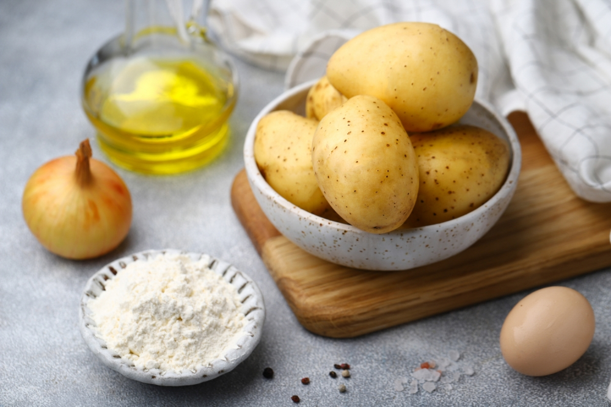
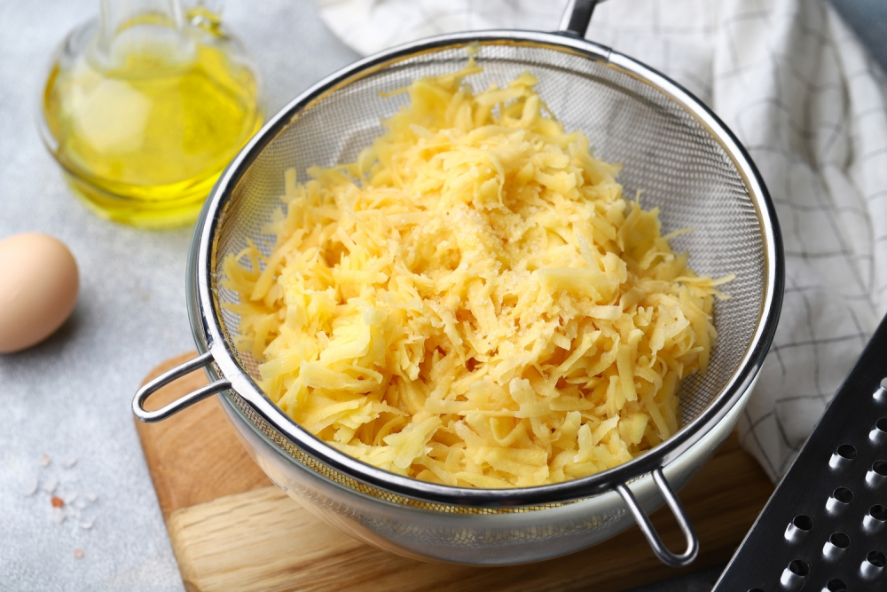
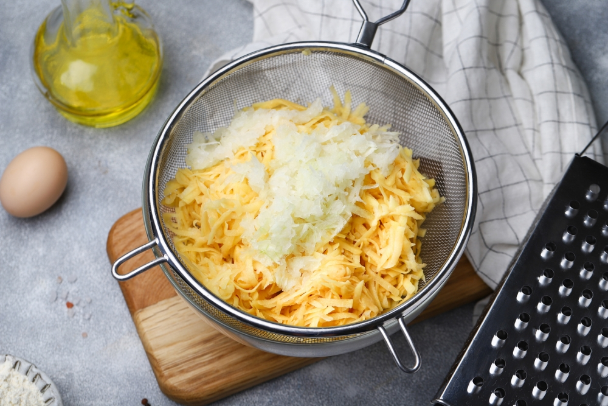
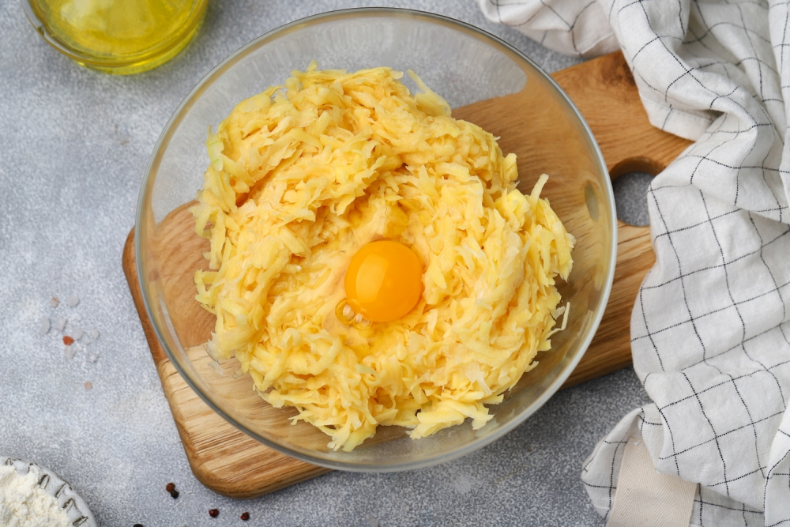
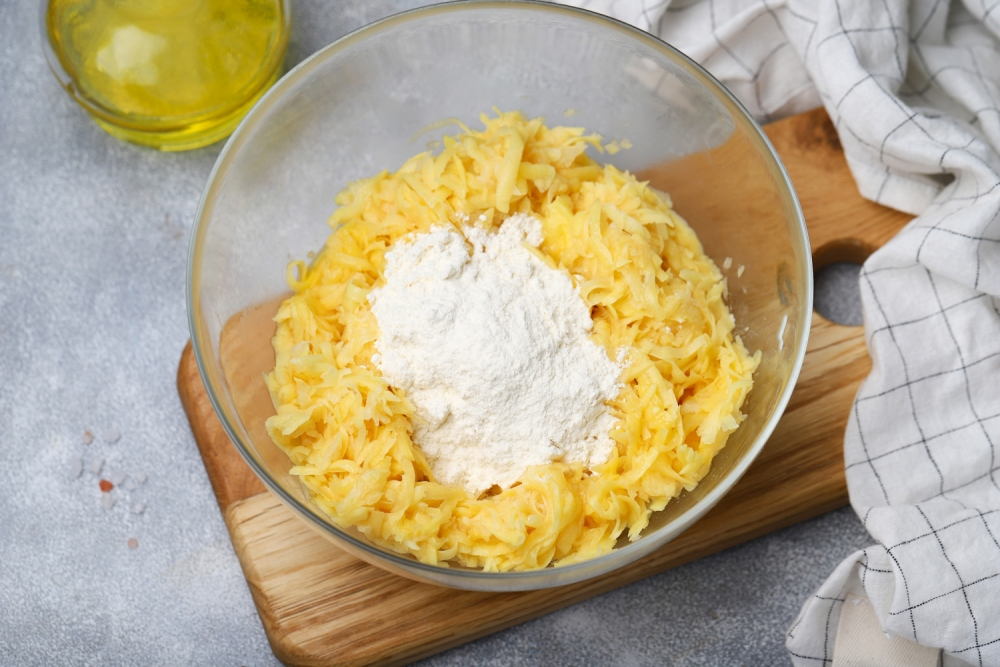
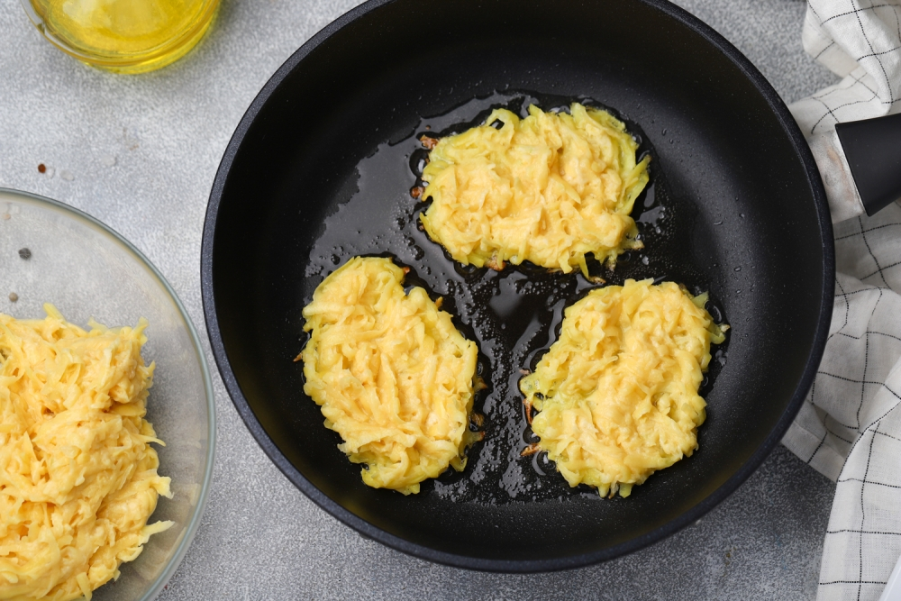
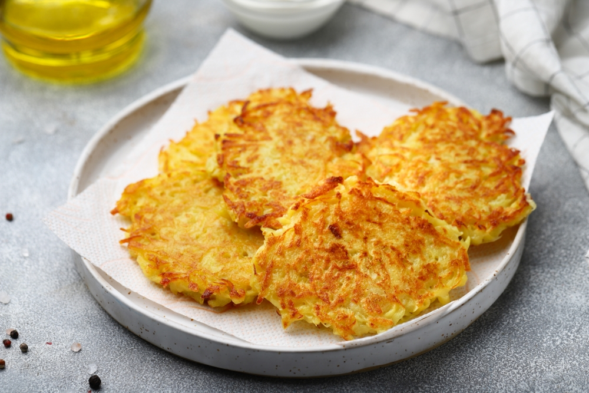
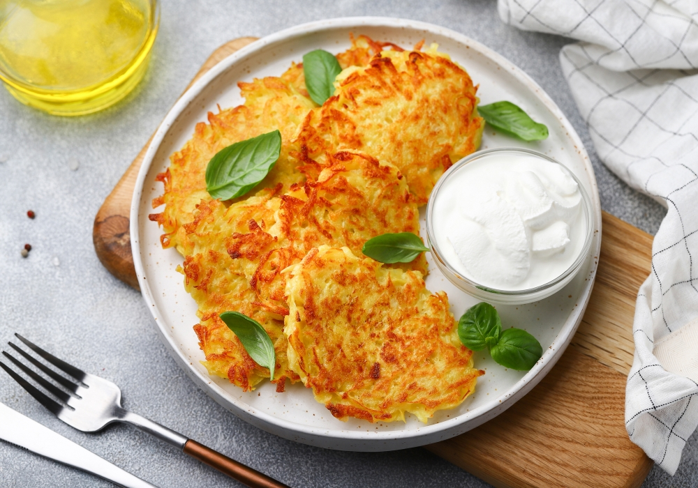

Подготовить все ингредиенты: картофель, лук, яйцо, масло растительное, муку и специи.
Сырой картофель очистить и натереть на крупной терке. Выложить его в миску, добавить соль, перемешать и переложить в дуршлаг, чтоб стекла лишняя влага из картофеля.
Лук очистить и натереть на крупной терке, добавить к картофелю и перемешать. Лук поможет сохранить цвет картофеля и не даст ему потемнеть. Очень хорошо отжать всю лишнюю жидкость.
Если не сливать лишнюю жидкость, в тесто придется добавлять гораздо больше муки, и тогда драники получатся не такими “картофельными”.
Переложить тертый картофель и лук в миску, добавить яйцо, перемешать.
Добавить к картофельной массе муку, поперчить и посолить по вкусу, тщательно перемешать до однородного состояния.
На сковороде разогреть достаточное количество растительного масла.
Столовой ложкой аккуратно выложить картофельную массу на сковородку в виде тонких оладий на небольшом расстоянии друг от друга.
Не стоит делать драники слишком толстыми, они останутся сырыми внутри.
Жарить драники на умеренном огне по 4-5 минут с каждой стороны до румяной корочки без крышки.
Это нехитрые правила: не добавлять много муки, выкладывать на сковороду тонким слоем, не закрывать крышкой - помогут вам приготовить картофельные драники по лучшему рецепту.
Готовые оладьи по мере готовности выкладывать на бумажное полотенце, чтоб впиталось лишнее масло.
Подавать драники горячими со сметаной.
По желанию в сметану можно добавить мелко нарезанную зелень, пропущенный через пресс чеснок, соль и специи.
